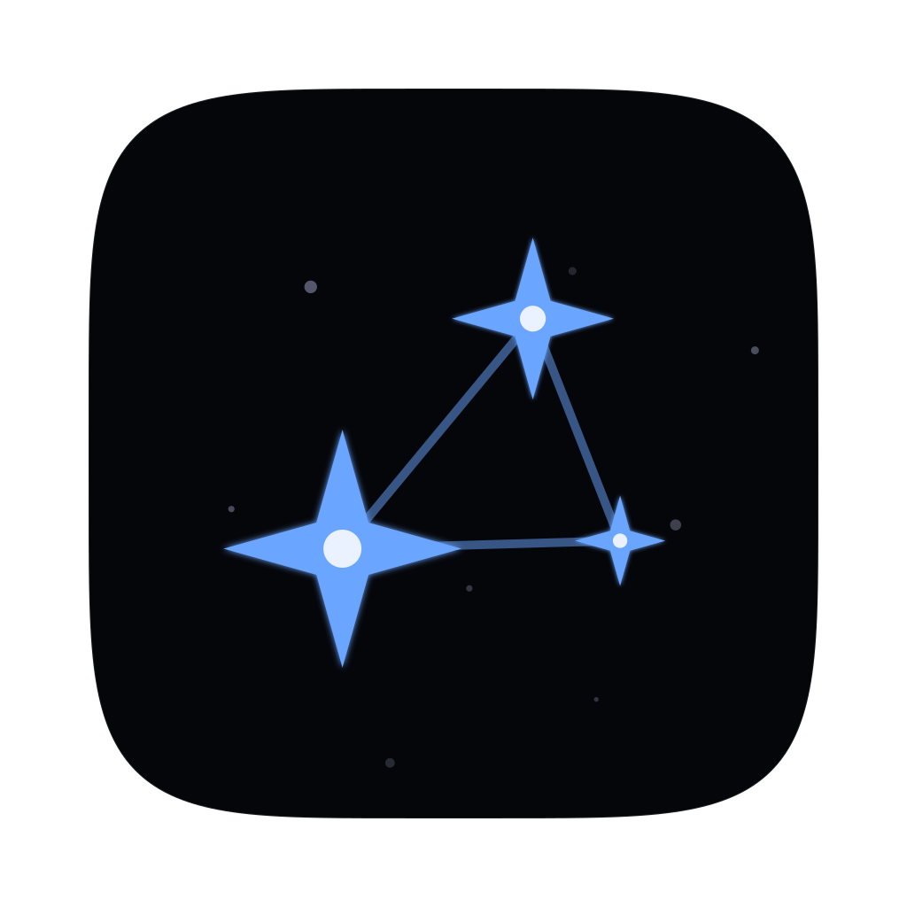

Second Brain
Map
Readiness
Divergence
Real estate
Goal
all
Tag
all
Pathway
none
show gaps
divergence
co-occurrence
cluster
spread
?
Cockpit
reference key
1 aware
2 comprehend
3 apply
4 fluent
5 mastery
not yet covered
Goal readiness radar
?
evidenced level vs required level per roadmap topic
evidenced
required
Confidence divergence
?
self-confidence vs AI-assessed level per topic — dots below the line are overconfidence
Knowledge real estate
?
Cockpit
✕
learn (AI)
Log
Quiz
Review
refresh (no AI)
Inbox
Ingest
Graph
Gaps
Status
Doctor
Go
Send